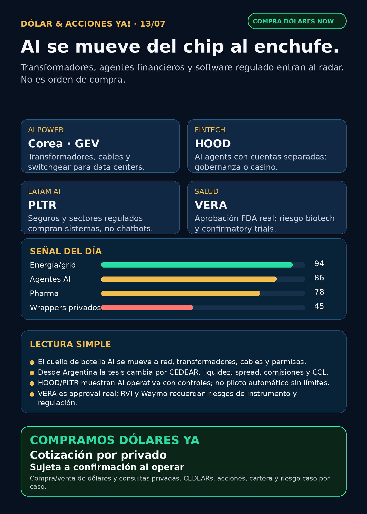

AI se mueve del chip al enchufe.
Power hardware coreano, agentes financieros, AI regulada en LatAm y salud verificable: research educativo para Argentina, no orden de compra.
Texto WhatsApp
Placa del día

Dólar & Acciones YA — 13/07
Fecha de edición: 2026-07-13. Research educativo para Argentina. No es recomendación personalizada de compra o venta.
Lectura simple del día
La tesis de hoy es clara: la AI ya no se mira solo por chips; se mira por electricidad física, red, transformadores, agentes financieros con control y software AI en sectores regulados.
En criollo: un data center necesita NVIDIA, TSMC y memoria, sí. Pero también necesita enchufe real: transformadores, switchgear, cables, subestaciones, permisos, gas, nuclear, cooling y financiación. Y si una empresa está buenísima afuera, todavía falta la parte argentina: CEDEAR o acción global, liquidez, spread, comisiones, MEP/CCL y tamaño prudente dentro de cartera.
Contexto dólar público al momento del armado: BlueLytics: oficial vendedor ARS 1.513,00; blue vendedor ARS 1.510,00; fecha 2026-07-13T08:45:53.052137-03:00. CriptoYa: MEP AL30 24hs ARS 1.567,51; CCL AL30 24hs ARS 1.540,43; USDT ask ARS 1.570,18; timestamps según fuente pública, no broker vivo. MEP/CCL públicos pueden ser de cierre o con delay; para ejecutar se confirma en broker/mercado vivo.
Esto está ordenado por valor educativo y fuerza de señal de radar, no por recomendación de compra.
Tesis central
El segundo peaje de AI es electricidad física. El cuello de botella se está moviendo de “quién tiene el chip” a “quién consigue energía, red, transformadores, cables, equipos de distribución y permisos a tiempo”. La señal fresca vino de Corea: power-grid stocks y equipment makers reaccionaron por demanda de AI data centers, mientras las fuentes sectoriales muestran backlogs grandes en Hyosung, HD Hyundai Electric y LS Electric.
La segunda señal es operativa: agentes financieros y AI enterprise empiezan a entrar en productos reales. Robinhood habla de AI agents conectados a cuentas crypto separadas con P&L y notificaciones; Palantir aparece ligado a seguros mexicanos y despliegues regulados/soberanos. Eso valida la idea de Simulación Uno: una IA suelta responde; una oficina agéntica trabaja con límites, evidencia y humano aprobando.
Señales educativas del día
1) AI power / grid hardware — Corea como señal fresca
- Instrumentos en radar: HD Hyundai Electric (
267260.KS), LS Electric (010120.KS), Hyosung Heavy Industries (298040.KS), Taihan Cable, Gaon Cable. Comparables/proxies globales: GE Vernova (GEV), Siemens Energy (ENR.DE), Hitachi/Hitachi Energy (6501.T/HTHIY). - Qué pasó: Bloomingbit / Korea Economic Daily reportó el 11/7 que power-grid stocks coreanas subieron por demanda de AI data centers: Gaon Cable +9,46%, Taihan Cable +8,81%, LS Electric +6,92%, LS +4,94% y HD Hyundai Electric +4,42%.
- Fuente: https://en.bloomingbit.io/feed/news/116053
- Soporte sectorial: BusinessKorea reportó backlog combinado de más de 30 billones de won, aprox. USD 21.400 millones, para Hyosung, HD Hyundai Electric y LS Electric, por demanda de ultra-high-voltage transformers y distribution equipment.
- Fuente: https://www.businesskorea.co.kr/news/articleView.html?idxno=272762
- Lectura en criollo: esto no significa “comprá Corea”. Significa que la cadena eléctrica de AI tiene peajes reales: transformadores, cables, switchgear, subestaciones y lead times.
- Accionable Argentina: pendiente. Corea/OTC no es fácil por default; hay que verificar broker, ADR/OTC, liquidez, spread, comisiones y alternativa vía CEDEAR/ETF/proxy global.
- Estado: señal fortalecida / vigilar.
2) Robinhood (HOOD) — agentes de trading, pero gobernados
- Qué pasó: Pulse 2.0 reportó el 13/7, con post embebido de Robinhood del 10/7, que usuarios elegibles de EE.UU. podrán conectar AI agents a una cuenta dedicada de Robinhood para operar crypto, con P&L en tiempo real, push notifications, fondos separados, desconexión del agente y MCP servers. El artículo cita más de 70.000 agentic accounts abiertas en las primeras semanas.
- Fuente: https://pulse2.com/robinhood-plans-to-let-ai-agents-trade-crypto-for-u-s-customers/
- Lectura en criollo: lo importante no es “un bot que gana plata”. Lo serio es cuenta separada, límites, ledger, notificaciones, auditoría y humano gobernando. Sin eso, es casino automatizado.
- Accionable Argentina: el producto operativo no es para Argentina por ahora. Como tesis de inversión,
HOODes global y acceso/CEDEAR local debe verificarse. - Estado: fortalece tesis / vigilar con riesgo regulatorio.
3) Palantir (PLTR) — AI regulada en LatAm
- Qué pasó: Yahoo Finance / Simply Wall St. reportó expansión multi-year/multimillion-dollar de Palantir con GNP Seguros en México y un modelo con Rackspace para desplegar plataformas AI en entornos regulados/soberanos.
- Fuente: https://finance.yahoo.com/markets/stocks/articles/palantir-pltr-lands-first-latin-121431834.html
- Lectura en criollo: LatAm empieza a comprar sistemas operativos AI para sectores regulados, no solo chatbots. Es señal comercial y narrativa para Simulación Uno.
- Limitación: falta fuente primaria directa de Palantir/GNP/Rackspace antes de usarlo como headline duro.
- Accionable Argentina:
PLTRglobal/CEDEAR o broker externo a verificar. Señal de radar, no precio de entrada. - Estado: fortalece tesis / falta primaria.
4) Vera Therapeutics (VERA) — aprobación FDA real fuera del ruido GLP-1
- Qué pasó: Vera informó por SEC 8-K que FDA otorgó accelerated approval a TRUTAKNA™ (atacicept-vymj) para reducir proteinuria en adultos con primary IgA nephropathy en riesgo de progresión.
- Fuente primaria: https://www.sec.gov/Archives/edgar/data/1831828/000119312526297211/vera-20260707.htm
- Lectura en criollo: approval acelerado quiere decir que FDA permite salida por un indicador sustituto, pero exige confirmación posterior. Puede ser oportunidad biotech y riesgo binario al mismo tiempo.
- Accionable Argentina: Nasdaq; CEDEAR/acceso local pendiente. No accionable sin precio, liquidez, horizonte, tamaño y riesgo biotech.
- Estado: fortalece tesis específica / vigilar.
5) Waymo / Alphabet (GOOGL) — physical AI también tiene riesgo de privacidad
- Qué pasó: NPR reportó el 10/7 un caso en San Mateo donde Waymo llamó a la policía por dos adolescentes en un robotaxi. La nota abre discusión sobre cámaras, micrófonos, sensores, datos, privacidad y uso policial.
- Fuente: https://www.npr.org/2026/07/10/nx-s1-5886113/waymo-police-privacy-driverless-autonomous-vehicles
- Lectura en criollo: robotaxi no escala solo con tecnología. También escala con permisos sociales, privacidad, regulación y confianza pública.
- Accionable Argentina:
GOOGLtiene vía global/CEDEAR probable, pero esto es riesgo narrativo/regulatorio, no catalyst de compra. - Estado: vigilar / riesgo regulatorio.
6) RVI — sponsor sales y wrappers privados
- Qué pasó: SEC Form 4 del 10/7 mostró que Robinhood Markets vendió 17.949 shares de RVI el 8–9/7 por aprox. USD 552.770; VWAP aprox. USD 30,80.
- Fuente primaria: https://www.sec.gov/Archives/edgar/data/2085091/000178387926000091/wk-form4_1783721789.xml
- Lectura en criollo: wrapper privado no es acceso limpio a SpaceX/OpenAI/Anthropic si no sabemos NAV, premium/descuento, holdings, fees, liquidez, float y ventas del sponsor.
- Accionable Argentina: acceso, volumen, spread y tratamiento fiscal pendientes.
- Estado: vigilar / riesgo de instrumento.
Watchlist base — seguimiento rápido
- RKLB: revisado. Sin primaria nueva superior. Sigue tesis space/defensa fortalecida por eventos previos, pero con deuda/dilución/integración y ventas 10b5-1 a mirar.
- NVDA: revisado. Sin primaria nueva fuerte; moat estructural de plataforma AI/inferencia/networking/software sigue vigente.
- PLTR: señal útil por LatAm/regulados; falta primaria directa.
- TSM: revisado; earnings cerca, no elevar previews como dato.
- MU: HBM/memory cycle vigente; sin primaria nueva.
- GOOGL/GOOG: Waymo suma riesgo privacidad/regulación; cloud/TPU sigue tesis estructural.
- AAPL: revisado; Broadcom/custom silicon sigue como contexto, sin señal nueva propia.
- HOOD: señal fuerte por agentic crypto/finance; RVI sponsor sale afecta wrapper, no core broker directo.
- TSLA: robotaxi/Optimus en ruido secundario; sin primaria nueva mejor.
- ASML: moat EUV/High-NA vigente; ASML sí / all-in no.
- Gold / GLD / GOLD / B: sigue ambiguo. No hablar de precio/tesis sin instrumento exacto.
- RVI: sponsor sale confirmada; falta NAV/holdings/premium/liquidez.
- CBRS: sin filing nuevo; mantener radar AI infra por OpenAI/AWS/customer concentration ya indexado.
Energía, grid y capa Argentina
- AI power global: carril fuerte: generación onsite, gas/nuclear, storage, transmisión, subestaciones, transformadores, switchgear, UPS, power quality, cables y cooling.
- Transformadores/power hardware: revisados
GEV, Siemens Energy (ENR.DE), Hitachi/Hitachi Energy (6501.T/HTHIY), HD Hyundai Electric (267260.KS), Hyosung (298040.KS), Virginia Transformer y Delta Star. Señal fresca más clara: Corea; proxies globales requieren ver precio, valuación y acceso. - Argentina energía:
YPF,PAMP,TGS,VIST,CEPUrevisadas. Sin señal operativa fuerte nueva para titular; quedan como radar local por Vaca Muerta, gas, generación, tarifas, deuda, exportaciones y regulación. - En criollo: utility = empresa de servicio/energía regulada. Puede tener demanda estable, pero no es bono gratis: tiene deuda, permisos, tarifas, política y capex.
Pharma/salud
- VERA/TRUTAKNA: señal limpia por SEC/FDA accelerated approval.
- AZN/IONS: sigue vigente la señal negativa previa de Wainua/eplontersen en ATTR-CM; no invalida todo AZN, pero debilita esa opcionalidad.
- GLP-1 / LLY: Foundayo/orforglipron sigue como anti-humo: aprobación real de abril, no novedad fresca de julio.
- Novo/Wegovy oral: sin señal fresca verificable 24–72h.
- Keytruda/Padcev y Sanofi/Sarclisa: titulares secundarios requieren primaria FDA/company antes de elevar.
Defensa, space, autonomía y crypto gobernado
- Defensa/guerra física:
AVAV,GE,RTX,LMT,NOC,GD,HWM,KTOS,BA,ITA/XARrevisados. Sin primaria nueva superior a AVAV Domestic Shield USD 500 millones ya indexado. Estado: revisado sin señal fuerte nueva;AVAVsigue radar alto por drones/counter-UAS, con integración/material weaknesses a mirar. - Space/orbital AI:
SPCX, SpaceX/Starlink,RKLB, DXYZ/RVI revisados. Sin nuevo SEC material. No repetir Stocktwits/TradingKey como verdad. - Autonomous mobility / physical AI: Tesla, Waymo/Alphabet, Uber, Zoox/Amazon y Joby revisados. Señal principal: Waymo/privacy como riesgo social y regulatorio.
- Crypto gobernado: HOOD entra como rails/agentes gobernados, no token trade. No hay token nuevo para elevar.
Private markets / wrappers
- RVI: sponsor sale nueva por Form 4; no usar como oportunidad sin NAV/premium/holdings.
- DXYZ / ARKVX / AGIX / XOVR / VCX / FAPMI / Forge: sin fact sheet/filing fresco verificable en esta corrida.
- Regla: private wrapper ≠ acceso directo limpio. Primero NAV, premium/descuento, holdings, fees, lockups, volumen, spread y acceso Argentina/USA.
Red flags / hype para ignorar
- “AI power” como compra automática sin revisar deuda, permisos, clientes, márgenes y supply chain.
- Corea/OTC vendido como si fuera CEDEAR líquido.
- AI agents como promesa de rentabilidad sin cuenta separada, límites, ledger, paper/read-only y aprobación humana.
- Titulares GLP-1 reciclados como si fueran catalyst fresco.
- Wrappers privados perseguidos por FOMO sin NAV/premium.
- Robotaxi presentado solo como tecnología, ignorando privacidad/regulación.
Qué mirar después
- Corea power hardware: filings/IR de Hyosung, HD Hyundai Electric y LS Electric; ADR/OTC/liquidez/acceso real.
- HOOD: términos, límites, availability, riesgo regulatorio y métricas de agentic accounts.
- PLTR/GNP/Rackspace: primaria directa de empresa antes de headline público duro.
- VERA: label FDA, approval package, pricing, launch y confirmatory trials.
- TSM/ASML/MU: earnings, capex, HBM, CoWoS, bookings y export controls.
- Argentina: MEP/CCL vivo de broker, spreads CEDEAR, liquidez y energéticas locales con fuente propia.
Cartera / portfolio base
La cartera de Ricardo fue liquidada, devuelta y terminada según estado vigente informado el 24/06. No hay posiciones activas ni P&L real para reportar. Dólar & Acciones YA queda como vigilancia educativa para próxima decisión humana o nuevo inversor.
CTA privado
Si querés comprar o vender dólares, invertir en acciones/CEDEARs o pensar una estrategia financiera más personalizada, escribime por privado y lo vemos caso por caso. Cotización sujeta a confirmación al momento de operar.
Disclaimer
Este reporte es informativo y educativo. No es asesoramiento financiero personalizado ni recomendación de compra/venta. Antes de ejecutar importan precio, horizonte, monto, liquidez, spread, impuestos, broker, objetivos y tolerancia al riesgo.